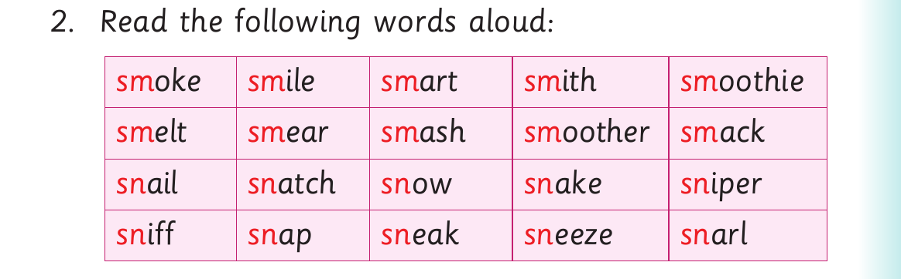

Exact visual panel 1 of 3 from this source page. The page uses visuals as follows: A rabbit models sm in smoke and sn in snake. The four picture answers are a snake, a snail, a sanding machine and a smoothie.
I can say sm sm sm smoke.
I can say sn sn sn snake.
Activity 1
Exact visual panel 2 of 3 from this source page. The page uses visuals as follows: A rabbit models sm in smoke and sn in snake. The four picture answers are a snake, a snail, a sanding machine and a smoothie.
1. Name the following pictures:
(a) (b) (c) (d)

Exact visual panel 3 of 3 from this source page. The page uses visuals as follows: A rabbit models sm in smoke and sn in snake. The four picture answers are a snake, a snail, a sanding machine and a smoothie.
2. Read the following words aloud:
sm oke sm ile sm art sm ith sm oothie
sm elt sm ear sm ash sm oother sm ack
sn ail sn atch sn ow sn ake sn iper
sn iff sn ap sn eak sn eeze sn arl